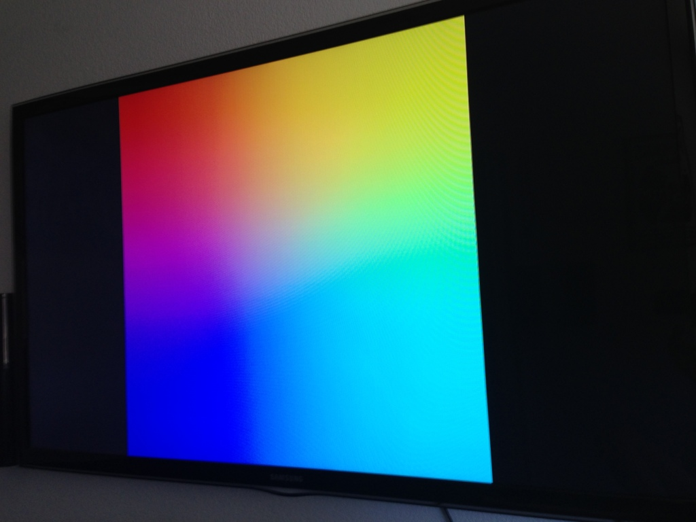
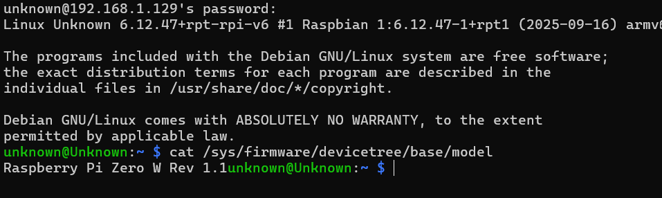
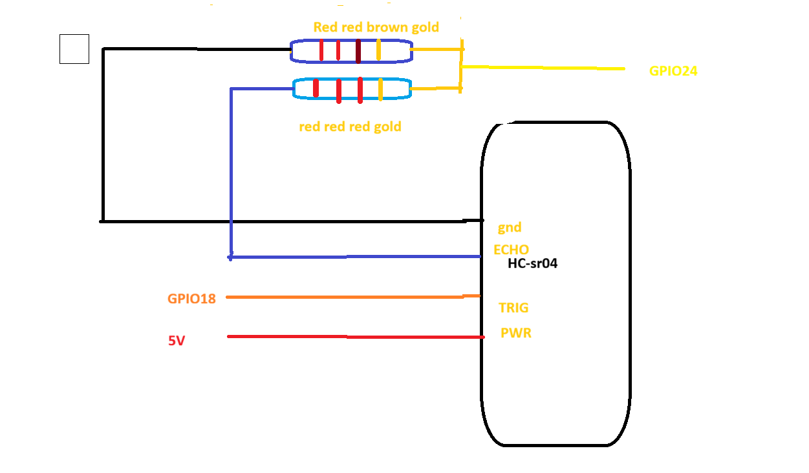
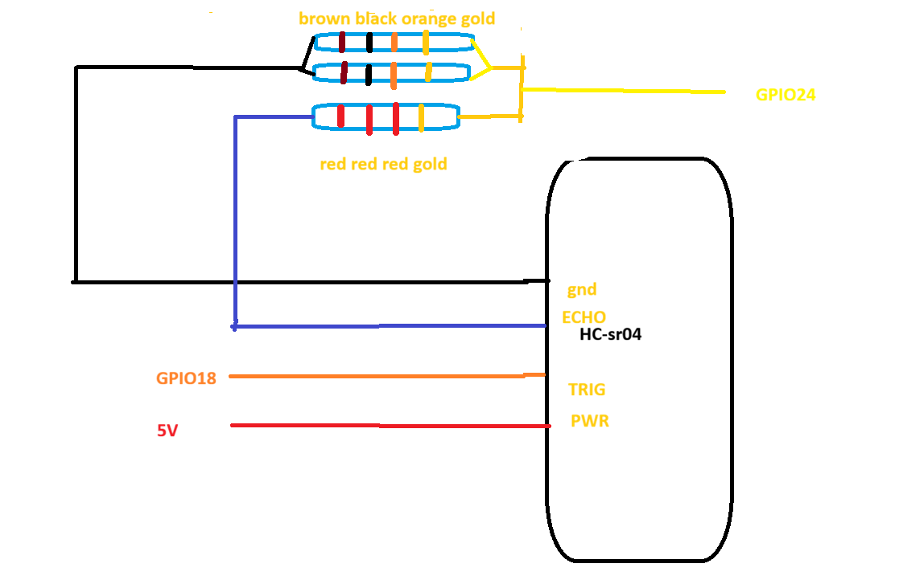
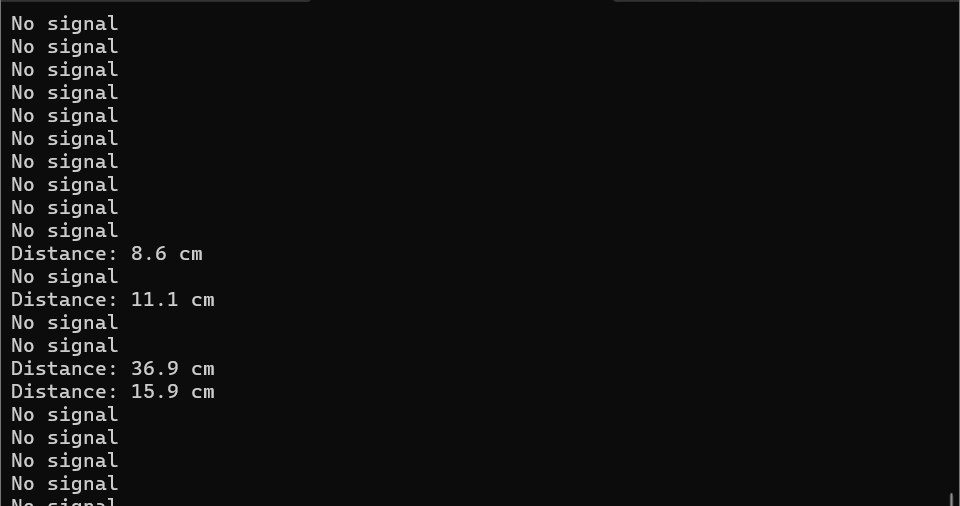

Raspberry Pi Distance Sensor System
This task involved configuring and troubleshooting multiple Raspberry Pi devices, followed by the implementation of a distance-based LED indicator system using an ultrasonic sensor (HC-SR04).
Initial Hardware Challenges
The task began with a Raspberry Pi 3, identified by its black USB ports. A 16GB memory card was flashed with the Raspberry Pi operating system and inserted into the pi. However, upon boot, the monitor failed to display output and continuously flashed primary colours.
After some anslyis it was supposed that the cause was insufficient power. The a samsung phone charger used which provided 2A, whereas the Raspberry Pi 3 requires from 2.5A–3A for stable operation. This likely prevented the system from completing the boot process.

Raspberry Pi 4 Display Issues
A Raspberry Pi 4 was then used utilized to attempt the complete the project. Hoever in this second case a different issue arose the monitor available for use monitor was only equiped with USB-C display input, port, while the Pi 4 outputs video via micro-HDMI. Finding a cable to connect these two system was unsuccessful Due to the lack of a direct cable. As such multiple adapters were tested, a port hub was even connected in the reverse order(primary port to monitor and secondary port to pi) to attempt to connect the the monitor to the pi.
Attempts included:
- Micro-HDMI to HDMI adapter
- USB-C hub with HDMI output
- External power supply for the monitor
Despite these configurations, no display output was achieved. After testing multiple connection orders and power configurations, it was concluded that the adapter being used was faulty.
Successful Setup: Raspberry Pi Zero W
The final solution involved using a Raspberry Pi Zero W, which required a mini-HDMI connection. After locating the correct adapter, the system successfully booted.
The lecture suggested that the pi zero had limitted display capabilites and as such an SSH was used instead of direct display output. The pi zero took approximately 4–5 minutes to complete its boot sequence.

System Design: Distance-Based LED Indicator
The project uses an HC-SR04 ultrasonic sensor to measure distance and control four LEDs to indicate proximity levels.
Distance Logic
- 60–80 cm: 4 LEDs ON (2 green, 2 red)
- 40–59 cm: 3 LEDs ON ( 1 green 2 red)
- 20–39 cm: 2 LEDs ON ( both red)
- Below 20 cm: red LED
Wiring Configuration & Issues
During testing, the ultrasonic sensor consistently returned a distance of 0 cm. This indicated either incorrect wiring or improper voltage handling.
The HC-SR04 sensor operates at 5V, while the Raspberry Pi GPIO operates at 3.3V. therfore A voltage divider was required on the ECHO pin. to achieve this a 220Ω and 10kΩ resitors were used as they were the only ones available at the time.
Issue Identified
The resistor combination used to correct the voltage were may have resulted incorrect voltage scaling, preventing proper signal detection.
Attempted Fix
- 220kΩ (top resistor)
- 2kΩ (bottom resistor)
- connected in the following order
- From echo pin ECHO pin → one end of 2kΩ resistor
- Other end of 2kΩ → GPIO24 at the Same point → connect one end of 220Ω
- Connect other end of 220Ω → GND

Working Fix
I decided tor try one last try one last thing which worked, however i only have partial evidence of this. below is the new config used.
- 1x1kΩ (top resistor)
- 2x2kΩ (botom resistors)
- connected in the following order
- From echo pin ECHO pin → one end of 2kΩ resistor
- Other end of 2kΩ → GPIO24 at the Same point → connect one end of 10KΩ twisted together( paralled)
- Connect other end of the twisted pair 2 10KΩ to → GND


Demo video
Python Implementation
Below is the code used to for this implementation
import RPi.GPIO as GPIO
import time
TRIG = 18
ECHO = 24
led_green = 17
led_blue1 = 27
led_blue2 = 22
led_red = 23
leds = [led_green, led_blue1, led_blue2, led_red]
GPIO.setmode(GPIO.BCM)
GPIO.setup(TRIG, GPIO.OUT)
GPIO.setup(ECHO, GPIO.IN)
GPIO.output(TRIG, False)
for led in leds:
GPIO.setup(led, GPIO.OUT)
GPIO.output(led, False)
def get_distance():
# Ensure clean LOW signal
GPIO.output(TRIG, False)
time.sleep(0.05)
# Send trigger pulse
GPIO.output(TRIG, True)
time.sleep(0.0001) # 20 microseconds (slightly longer)
GPIO.output(TRIG, False)
start = time.time()
timeout = start + 0.05
# Wait for echo HIGH
while GPIO.input(ECHO) == 0:
start = time.time()
if start > timeout:
return None
stop = time.time()
timeout = stop + 0.05
# Wait for echo LOW
while GPIO.input(ECHO) == 1:
stop = time.time()
if stop > timeout:
return None
elapsed = stop - start
distance = (elapsed * 34300) / 2
return distance
def update_leds(distance):
for led in leds:
GPIO.output(led, False)
if distance >= 60 and distance <= 80:
for led in leds:
GPIO.output(led, True)
elif distance >= 40:
GPIO.output(led_blue1, True)
GPIO.output(led_blue2, True)
GPIO.output(led_red, True)
elif distance >= 20:
GPIO.output(led_blue2, True)
GPIO.output(led_red, True)
else:
GPIO.output(led_red, True)
time.sleep(0.1)
GPIO.output(led_red, False)
try:
while True:
d = get_distance()
if d is not None:
print("Distance:", round(d, 1), "cm")
update_leds(d)
else:
print("No signal")
time.sleep(0.2)
except KeyboardInterrupt:
GPIO.cleanup()
Observaion
Sometimes when the the pi is powered off and the monitor is disconnected and the wires are touched one of the leds would light. i don't have capacitor on the board and the pi zerodoes not have a built in battery. it wierd
Conclusion
This task highlighted the importance of hardware compatibility, correct power requirements, and proper signal conditioning when working with embedded systems.
The transition from Raspberry Pi 3 to Pi 4 and finally to Pi Zero demonstrated the need for adaptability in engineering workflows. Additionally, debugging sensor readings reinforced the importance of correct GPIO mapping and voltage control.